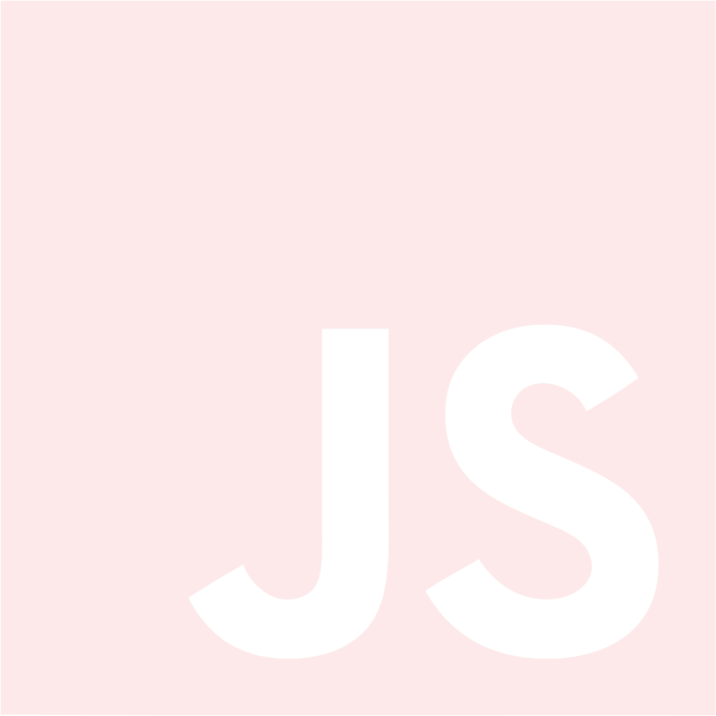
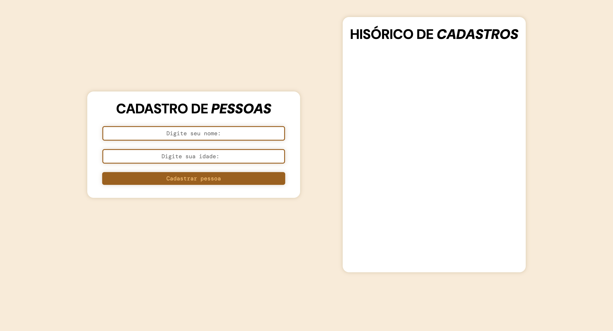

Thiago
Amaral

- ADAPTABILIDADE
- PERSISTÊNCIA
- ORGANIZACÃO
- APRENDIZADO CONTÍNUO
- PENSAMENTO ANALÍTICO
Estruturação semântica e organização de interfaces web, com foco em código bem estruturado e acessível.

Construção de interfaces responsivas, trabalhando com layouts, Flexbox, posicionamento, animações e princípios de design.

Aprofundamento dos fundamentos da linguagem, incluindo lógica de programação, funções, objetos, arrays, manipulação do DOM e recursos modernos do JavaScript (EcmaScript 6).
Desenvolvendo conhecimentos em programação estruturada, sintaxe, estruturas de controle, funções e manipulação de dados.
Sou o Thiago Amaral de Oliveira, tenho 18 anos e sou estudante de Engenharia de Software. Estou construindo minha formação na área de desenvolvimento aos poucos, combinando estudo, prática e projetos pessoais.
Comecei pelos fundamentos do desenvolvimento web e, desde então, venho evoluindo de forma constante, aprendendo programação e entendendo melhor como aplicações são estruturadas. Hoje, estou focado em fortalecer minha base em JavaScript e C, além de aprofundar os conceitos que envolvem tanto o Front-end quanto o Back-end.
Meu objetivo é construir uma carreira sólida em desenvolvimento de software, me tornando um profissional capaz de entender problemas e transformá-los em soluções bem feitas e funcionais.
SEGUNDO SEMESTRE

Página web desenvolvida como projeto prático durante meus estudos de desenvolvimento web, explorando estruturação semântica, estilização e organização de conteúdo com HTML e CSS.
HTML • CSS
VER >
Sistema simples para cadastro e gerenciamento de informações de pessoas, desenvolvido para praticar formulários, manipulação de dados e JavaScript.
HTML • CSS • JavaScript
VER >Uma ideia de site que une pessoas que desejam contribuir a ajudar vítimas que sofrem com desatres naturais.
HTML • CSS • JavaScript
VER >